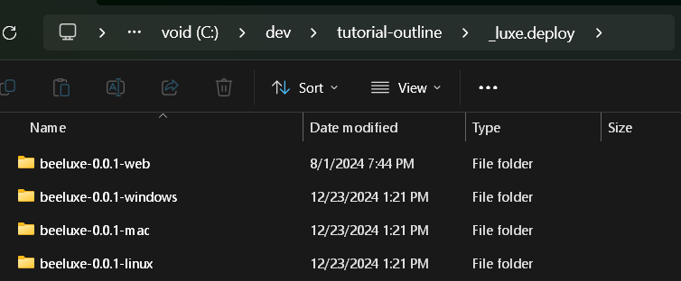
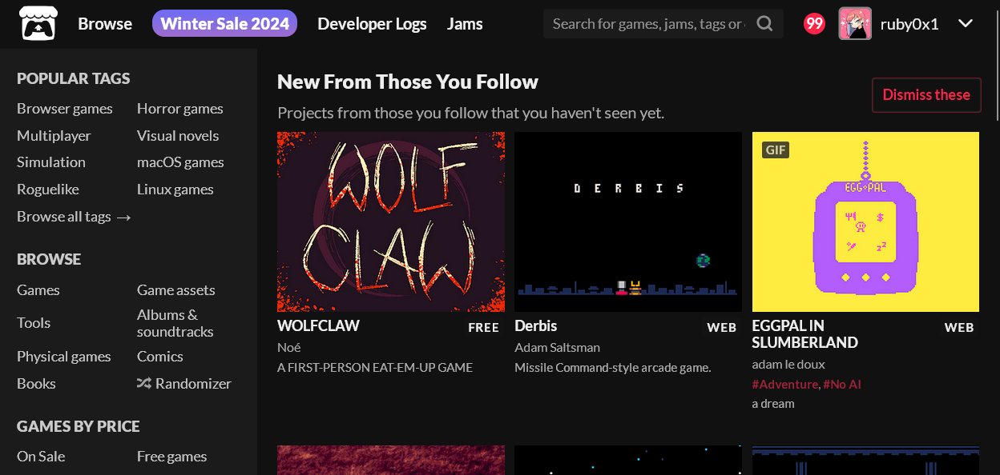
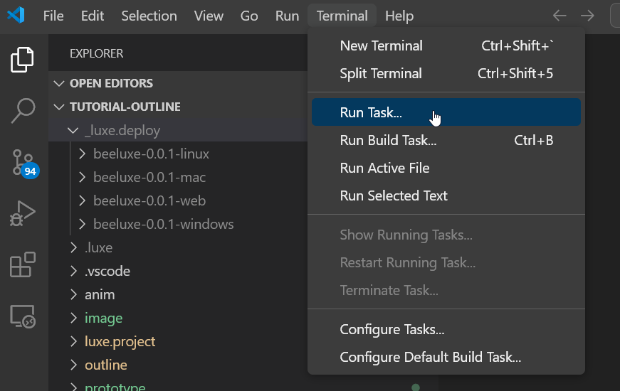
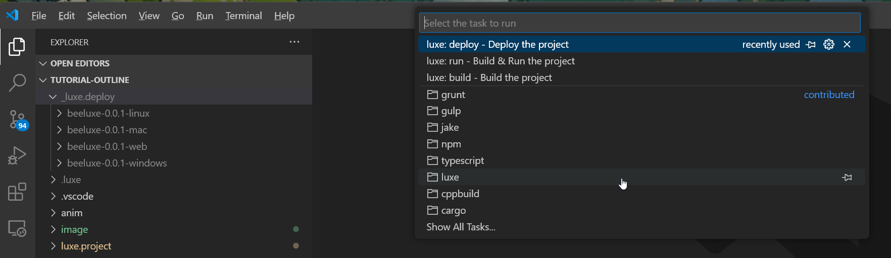
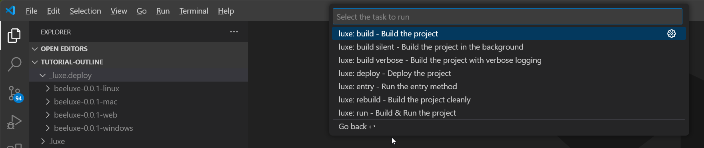
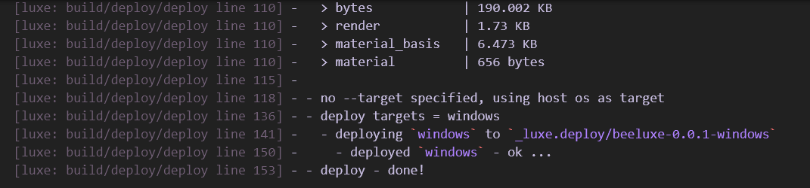
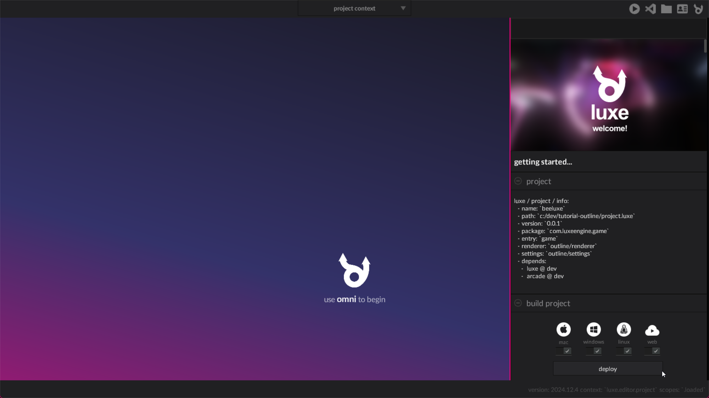
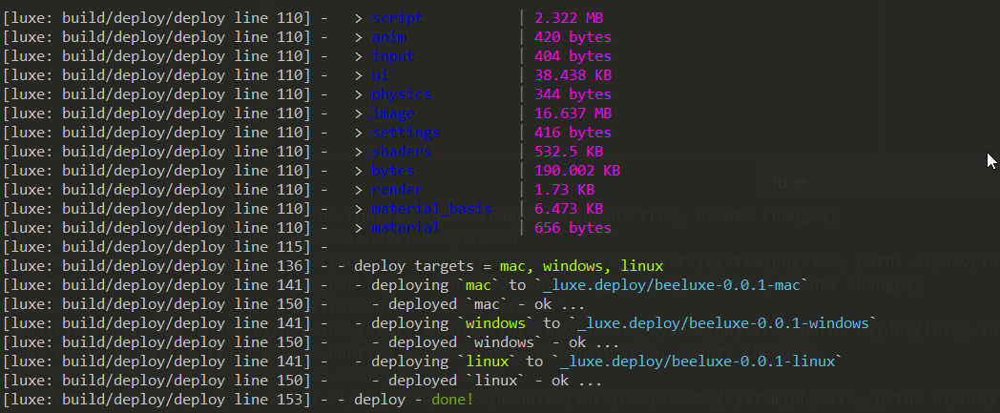

Deploying a build¶
A quick look at making a build for a luxe game that you can share.
outcome
In this tutorial we'll make a build of our bee game.
We'll see how to use the editor, vscode, and the terminal to do it.
The _luxe.deploy/ folder¶
When you deploy a build with luxe, currently it places the builds into a folder called _luxe.deploy/ inside the project.

The contents of the folder is a versioned build separated by build target/platform. This makes it easy to zip a folder (e.g beeluxe-0.0.1-windows -> beeluxe-0.0.1-windows.zip) and upload the file directly or share with a friend.
You'll notice that we have multiple platforms here - You can build for other platforms from the one you are on, as long as you're on the main path.
The build is cross platform - but there are some nuances (e.g executable flag on linux/mac) to beware of when sharing a build.
itch.io¶
A common place to share your games with others is https://itch.io - which is free and allows making your game available for others to play.

Their system deals with cross platform details mentioned above, so if you made a zip of each of these folders and uploaded it to itch.io following their documentation and guidelines, you're good to go. You can also join game jams or host one and a lot more.
Versioning¶
Note that the builds use the project version number in the folder - but will overwrrite the existing build if you build multiple times with the same version number.
Versioning is important
Update your version inside luxe.project/version.lx each time you build, or back up your builds! You can also automate the version number changing every time you deploy - see this dev log for now.
Deploy from Visual Studio Code¶
Currently, deploying from vscode only deploys for the target you are developing on
If you visit the Terminal menu on the main menu bar, you'll find a Run Task... menu option:

Inside it, there's a category for luxe, as well as previously used ones if any (usually none at first).

And inside the luxe folder, we have some options, one of which is luxe: deploy - Deploy the project.

Selecting this option will drop the latest build for the platform you're using into the folder and print some info:

Deploy from the luxe editor¶
Inside the editor in the project context (the default one you start on), there's a section for deploying a build for various targets.

If you hit deploy, give it a few seconds to finish up and it should open the folder containing the builds.
Deploy from a terminal¶
You can also deploy from the terminal or command line. The syntax is luxe deploy with --target <platform>.
By default, luxe creates a shortcut to the latest luxe binary inside your user folder, such as:
~/.luxe/bin/luxeC:\Users\USER\.luxe\bin\luxe
We can use this to always find a luxe binary typically. We can specify more than one target as well, by specifying --target multiple times.
You can enter something like this into your terminal of choice, and hit enter to deploy the build.
c:\Users\ruby\.luxe\bin\luxe deploy --target mac --target windows --target linux
Or on mac/linux:
~/.luxe/bin/luxe deploy --target mac --target windows --target linux

Additional flags¶
Any flags passed to the deploy action will be available inside your project.luxe file, allowing you to do different things for different builds.
For example we use a --steam flag to signal that we want to copy additional binaries and bump the version explicitly when deploying for Steam.
See this dev log for now but here is an example of accessing the flags:
postdeploy() {
import "luxe: io" for IO
var flags: Flags = IO.flags()
var do_copy = flags.has("copy")
if(do_copy) {
//do something
}
} //postdeploy
Try this¶
Make a build
Make a build of your tutorial progress and share it with a friend or community.